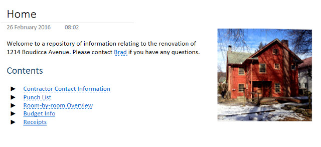
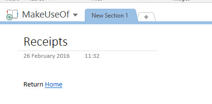
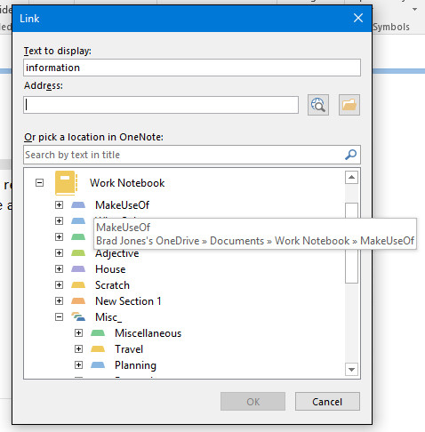
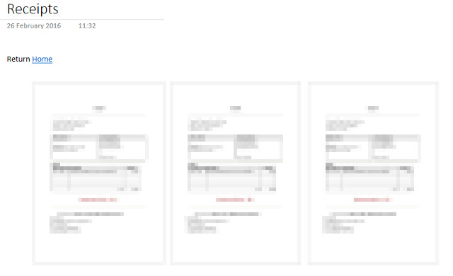
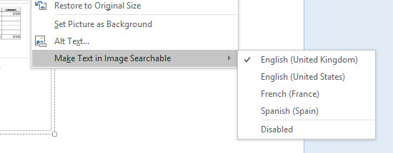
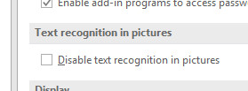
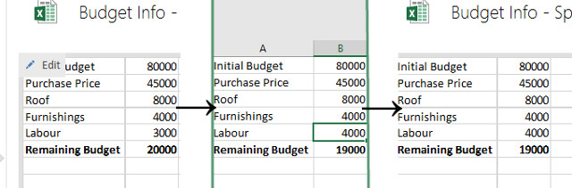

OneNote is the best alternative for taking notes, but don’t write it off as a one-trick-pony. OneNote’s deep links into the wider Microsoft Office ecosystem make it a powerful piece of software, way beyond making lists or storing notes.
If you’ve ever wondered whether a wiki could help organize your thoughts, a document built in OneNote is a great way to dip your toe in the water. Here’s a brief primer on how a wiki can help supercharge your workflow, and all the information you need to build one in OneNote.
What Is a Wiki?
The most well-known wiki in the world is undoubtedly Wikipedia, and that site is a great starting point to help understand what the format is. At its core, a wiki is a collection of content that’s liberally punctuated with hyperlinks to aid navigation, often collaborated upon by many users.
It’s worth noting that a wiki doesn’t have to be neat and tidy — and, if you’re working in OneNote rather than on a public wiki published online, there’s really no reason to be. Treat it like your favourite notebook, and focus on creating a document that serves its purpose well.
What Makes OneNote a Great Wiki?
Most wikis are created with a content management system, and the document itself is typically hosted online, with an open registration system that allows users to set up their own accounts. This works well for a project that’s as large as something like Wikipedia, or if the creators want to have full control over the styling of their document via the use of CSS.
Meanwhile, OneNote offers a different set of advantages; it’s free, cross-platform, and incredibly easy to set up and share. You can have your wiki up and running in a few minutes, especially if everyone is already using OneNote or has a Microsoft account.
A OneNote wiki is the best solution for small teams that have to share a great deal of well categorized and easy to navigate information. Some examples:
- A collaborative school project; the wiki format allows you to carry out your individual research independently, while creating a complete document that covers the entire topic at hand.
- Planning for a big family gathering; individual pages could relate to elements like the event location, the food and drink set to be on offer, and the guest list.
- Instructional documentation; if your workplace has plenty of tasks that require written walkthroughs, a wiki is a great way to gather them together and allow for easy edits as methods change over time.
For this walk-through, we’re going to use a wiki to collect all the information necessary to have on hand while moving into and renovating a house.
Setting Up a Wiki in OneNote
1. Create a Homepage
First, set up your wiki’s homepage and keep in mind that it will be the starting point for anyone dipping into the document.

Here’s an example of what your homepage might look like — aesthetic touches like including an image are strictly optional, but if you’re working on a personal project, there’s no reason not to add a little bit of visual interest for your own sake. In OneNote, any steps you take to personalize your document will make it feel more like a well-thumbed notepad than a dry digital file, and that can help make note-taking feel more natural.
2. Link to Other Pages
The most important thing to pick up here is the idea of linking from page to page. As of Office 2010, OneNote supports a streamlined version of the standard wiki link syntax, and it makes producing a richly interconnected document very easy. When you want to add a new page in your wiki, simply introduce it in normal text by surrounding the desired title with two sets of square brackets, e.g. [[name of new page]].
The text will automatically transform into a link, and if there’s no page with that title already, one will be created. It’s a good idea to create backlinks to make navigation even easier.

The important thing to consider when placing links is whether or not they’re going to save you time in the future. Of course, one of the strengths of the wiki format is the fact that you can constantly edit and amend your work — once it’s up and running, add links in when you find yourself moving from one page to another on a regular basis.
3. Create Links to Other Notebooks
While it’s generally a good idea to limit your Wiki to a sngle OneNote Notebook, there may be occasions where you want to link to a piece of content that’s located in another Notebook.
To do so, highlight the text you want to turn into a link and press CTRL + K or navigate to Insert > Link. You’ll be presented with a dialog box that allows you to browse or search locations on your computer and the web, as well as some quick links to OneNote locations.

At this point, it might be worth creating a corresponding link in the other Notebook, if there’s a reason that you might be flitting back and forth between two separate Notebooks on a regular basis.
Fleshing Out Your Wiki
The best thing about using OneNote as a wiki platform is its support for many different types of content. Similar results can be had with a traditional wiki, but it’s certainly much easier to accomplish in OneNote thanks to its stock feature set — a service like MediaWiki might require you to install extensions for yourself.
1. Inserting File Attachments
One handy technique is to insert other files into the OneNote document. If you want to edit the file, your best bet is to navigate to the Files section of the Insert tab and select File Attachment. However, if it’s just for reference, you’re best choosing the nearby File Printout option instead.

As you can see, I’ve inserted PDF copies of some receipts onto the appropriate page. This is a good way of keeping essential files handy, but that’s not the only functionality on offer.
2. Making Text Searchable
OneNote can also make the text of files like this searchable, further enhancing your wiki’s ability to act as a comprehensive resource on your project. You can do so manually by right-clicking a file that you have inserted.

While OneNote does automatically make text in images and other inserted files, this process is limited by default to cut down the strain on your system resources. However, you can opt to change these settings by navigating to File > Options and choosing the Advanced section.

Make sure that the above box is unchecked, then find the Battery Options section and make any desired changes via the dropdown menu. Five tiers are available to choose from, ranging from better battery life to quicker text recognition and search indexing.
3. Embedding Spreadsheets
You can go one better with an Excel spreadsheet; by navigating to Insert > Spreadsheet > New Excel Spreadsheet, OneNote will create a new document and embed it on the current page. With one click, you can edit that document in Excel, and any changes made will be updated in your wiki.

OneNote can be a very powerful wiki platform when functionality like this is properly implemented. The best way to understand what works for you is to experiment freely — see what’s useful and what isn’t, and make regular edits to the way your information is laid out accordingly.
It’s Time to Start Your First OneNote Wiki!
Active use is the only way you’ll be able to assess whether your OneNote wiki is fit for the job. So get it up and running, integrate it into your workflow, and make your decisions from there.
Do you have a great tip for using OneNote as a wiki platform? Do you have a question about setting up your own wiki? Join the conversation in the comments section below.
Image Credits:Pile of documents by Freer via Shutterstock

A question about each of 2 of your comments:
* you say it is a good idea to create backlinks: how do you do that in OneNote?
* OneNote can make text of files searchable: I assume you mean text of attachments? If so, how do you make that searchable? I have not found a way.